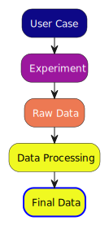
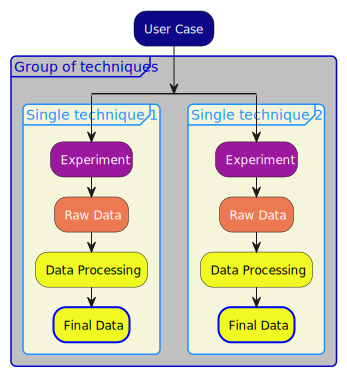

Making a CHADA/MODA workflow diagram with plantuml and mochada_kit#
This example shows how to make a CHADA and/or MODA workflow diagram using plantuml and mochada_kit.
1. Basic plantuml activity diagrams#
CHADA/MODA workflow diagrams are made using plantuml activity diagrams. The basic syntax is as follows: we start with a @startuml and then have one or more activity elements, whose name is defined between a colon and a semicolon: :name;. If there is more than one activity element, they will be joined using a vertical arrow running from top to bottom. The code ends with @enduml.
For example, this code:
@startuml
:activity 1;
:activity 2;
@enduml
would result in a diagram where the element called activity 1 is at the top and is joined to the other element, called activity 2, by a vertical arrow.
2. Applying a theme#
The code above would result in a diagram in which all the text and lines are black and all areas are white.
Using a theme helps us to
apply parameters to the entire diagram
apply different styles to different elements.
More information on themes in general is provided here
In mochada_kit bespoke themes for CHADA and MODA diagrams have been developed and are located in the directory mochada_kit/themes. To apply a theme to a plantuml diagram we need to add a line to the code above giving the name of the theme to be applied and the location of the folder where the themes reside. For example, to apply the theme MOCHADA-CWA, we write:
@startuml
!theme MOCHADA-CWA from ../../themes
:activity 1;
:activity 2;
@enduml
If you look in mochada_kit/themes, you will see that all the themes have this naming convention puml-theme-*.puml, where the * represents the name of the theme. In the line of code starting with !theme we only need the part of the theme name given by the * (without the starting puml-theme-and ending .puml). We then need to write from and give the location of the themes folder. If we want to store the plantuml code in mochada_kit/gallery/puml_code the relative
location of the mochada_kit/themes folder is ../../themes.
Note
If you want to store your puml code somewhere else, you may want to put the absolute path to the mochada_kit/themes folder. This can be easily obtained by importing mochada_kit and printing the _THEMES_DIR constant. Whichever operating system you are using, this is already formatted as a posix path (with forward slashes), which is required by plantuml e.g.:
import mochada_kit as mk
print(mk._THEMES_DIR)
D:/folder1/folder2/mochada_kit/themes
3. Using stereotypes#
So far, we have only applied a theme to the entire diagram. This allows us to change the background colour of the resulting figure, for example. The main advantage of using mochada_kit is that we can use stereotypes to apply a particular style to particular elements.
For CHADA, there are 5 different types of elements, each of which requries a stereotype:
Number |
Element Type |
Stereotype Name |
|---|---|---|
User Case |
<<user_case>> |
|
Experiment |
<<experiment>> |
|
Raw Data |
<<raw_data>> |
|
Data Processing |
<<data_processing>> |
|
Final Data |
<<final_data>> |
For MODA, there are 5 different types of elements, each of which requries a stereotype:
Number |
Element Type |
Stereotype Name |
|---|---|---|
User Case Input |
<<user_case_input>> |
|
Model |
<<model>> |
|
Raw Output |
<<raw_ouput>> |
|
Processed Data |
<<processed_data>> |
|
Data Based Model |
<<data_based_model>> |
In each MOCHADA theme in mochada_kit/themes, all of these different types of element has its own style. You can see the structure of any of the themes by opening it in a text editor. Each theme contains comments, which add extra explanations.
Once we have added the line telling plantuml to use a particular theme, we only have to apply a stereotype to each element to change its appearance:
@startuml
!theme MOCHADA-CWA from ../../themes
:activity 1; <<user_case>>
:activity 2; <<experiment>>
@enduml
This results in the element activity 1 appearing pink and the element activity 2 appearing light blue. The colours simply depend on which theme you choose.
The important point is that the puml code is now machine readable - we can easily tell by looking at the puml code which CHADA or MODA type an element has. This will facilitate parsing the workflow diagrams in order to understand the structure of the data in terms of domain ontologies.
4. Basic example#
If we want to make a workflow diagram just showing one of each type of CHADA element and using the MOCHADA-plasma theme (e.g. to use as a legend), the code would look like this:
@startuml
!theme MOCHADA-plasma from ../../themes
:User Case; <<user_case>>
:Experiment; <<experiment>>
:Raw Data; <<raw_data>>
:Data Processing; <<data_processing>>
:Final Data; <<final_data>>
@enduml
We just need to write this code to a text file (in this case in the folder mochada_kit/gallery/puml_code):
[2]:
import pathlib
[7]:
puml_code = """@startuml
!theme MOCHADA-plasma from ../../themes
:User Case; <<user_case>>
:Experiment; <<experiment>>
:Raw Data; <<raw_data>>
:Data Processing; <<data_processing>>
:Final Data; <<final_data>>
@enduml
"""
out_file_path = pathlib.Path("../../gallery/puml_code/legend_chada_plasma_theme.puml")
with open(out_file_path, "w") as handle:
handle.write(puml_code)
and then run this code against plantuml.jar. There is a convenience function for this: mochada_kit.running.run_plantuml_code() and we just need to supply two arguments: the path to the plantuml code and an output path (in this case the output path just goes up one step in the directory structure from the folder where the plantuml code resides i.e. it points to mochada_kit/gallery:
[8]:
import mochada_kit.running as mr
[9]:
mr.run_plantuml_code(
pathlib.Path("../../gallery/puml_code/legend_chada_plasma_theme.puml"),
output_dir=pathlib.Path("../"),
)
Here’s the resulting diagram:

5. Example with grouped elements#
All the MOCHADA themes in mochada_kit/themes contain style definitions which allow us to group elements in a single characterisation or modelling technique, and to group several techniques.
An example of this would be:
@startuml
!theme MOCHADA-plasma from ../../themes
:User Case; <<user_case>>
group Group of techniques <<group_collection>>
split
group Single technique 1<<group_single>>
:Experiment; <<experiment>>
:Raw Data; <<raw_data>>
:Data Processing; <<data_processing>>
:Final Data; <<final_data>>
detach
end group
split again
group Single technique 2<<group_single>>
:Experiment; <<experiment>>
:Raw Data; <<raw_data>>
:Data Processing; <<data_processing>>
:Final Data; <<final_data>>
detach
end group
end split
end group
@enduml
Let’s run this one too:
[10]:
puml_code = """@startuml
!theme MOCHADA-plasma from ../../themes
:User Case; <<user_case>>
group Group of techniques <<group_collection>>
split
group Single technique 1<<group_single>>
:Experiment; <<experiment>>
:Raw Data; <<raw_data>>
:Data Processing; <<data_processing>>
:Final Data; <<final_data>>
detach
end group
split again
group Single technique 2<<group_single>>
:Experiment; <<experiment>>
:Raw Data; <<raw_data>>
:Data Processing; <<data_processing>>
:Final Data; <<final_data>>
detach
end group
end split
end group
@enduml
"""
out_file_path = pathlib.Path(
"../../gallery/puml_code/legend_chada_plasma_theme_with_groups.puml"
)
with open(out_file_path, "w") as handle:
handle.write(puml_code)
[11]:
mr.run_plantuml_code(
pathlib.Path("../../gallery/puml_code/legend_chada_plasma_theme_with_groups.puml"),
output_dir=pathlib.Path("../"),
)
And here’s the resulting diagram:

6. Next steps#
To learn how to draw more complex diagrams, please refer to the plantuml website on activity diagrams
Please check out the other diagrams in
mochada_kit/gallerywith accompanying plantuml code inmochada_kit/gallery/puml_codeThere is a separate jupyter notebook on using hyperlinks in CHADA and MODA workflow diagrams
mochada_kit/examples/using_hyperlinks_in_workflow_digarams.ipynb